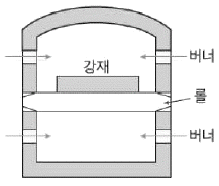
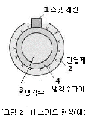
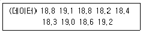

압연기능장 (2018-03-31 기출문제)
1과목: 임의 구분
1. 다음중 롤 몸체의 절손 원인이 아닌 것은?
- 주물의 불량
- 작업온도 불 균일
- 롤 조절 불량
- 압연재의 과열
(정답률: 80%)

2. 롤과 재료가 접촉하고 있는 부분의 투영접촉길이(Ld)를 구하는 식은? (단, R은 롤의 반경, h1은 입구의 두께, h2 은 출구의 판 두께이다.)
- Ld = R2 × (h1-h2)
- Ld = R × (h1-h2)
- Ld = √(R2 (h1-h2))
- Ld = √(R (h1-h2))
(정답률: 58%)
3. 텔레스코프의 발생 원인이 아닌 것은?
- 코일러와 사상압연 속도의 동기가 불량할 때
- 슬래브의 편열 및 에지온도가 불균일할 때
- 사상압연기 루프의 장력이 불량할 때
- 핀치롤, 래퍼롤(wrapper roll)과의 갭 설정 등의 조작이 불량할 때
(정답률: 60%)
4. 열간압연의 일반적인 설명과 관련이 가장 적은 것은?
- 주조조직의 개선 및 기계적 성질이 향상된다.
- 냉각압연에 비해 치수 정도가 매우 우수하며 표면이 미려하다
- 냉각압연에 비해 저항이 적고 작은 동력으로 커다란 변형을 줄 수 있다.
- 재결정온도 이상에서 가공하므로 재질의 균일화가 이루어진다.
(정답률: 88%)
5. 가공 경화된 재료를 풀림하면 온도에 따라 여러가지 변화가 일어난다. 그 순서로 옳은 것은?
- 회복 → 재결정 → 결정립 성장
- 회복 → 결정립 성장 → 재결정
- 재결정 → 결정립 성장 → 회복
- 재결정 → 회복 → 결정립 성장
(정답률: 76%)
6. 연속풀림에서 가공성이 양호한 강판을 제조하기 위해서는 열연 고온 권취가 유효하다. 열연 고온 권취의 목적이 아닌 것은?
- MnS를 적정하게 분산한다.
- 냉연 전의 결정립을 조대화 한다.
- 냉연 재결정 시 탄소의 고용을 빠르게 한다.
- Al킬드강에서는 Al을 석출시켜 고용 질소를 고정하는 효과가 있다.
(정답률: 61%)
7. 롤의 구성이 아닌 것은?
- 목(Neck)
- 몸체(Body)
- 연결부(Wobbler)
- 크라운(Crown)
(정답률: 83%)
8. 압연작업을 할 때 소재의 입측 속도를 V1, Roll 회전속도를 V, 소재의 출측 속도를 V2라 할 때 압연시 속도가 빠른 순서로 나열한 것은?
- V2 > V > V1
- V1> V > V2
- V > V2 > V1
- V > V1 > V2
(정답률: 76%)
9. 다음 중 압연 전동기로부터 피니언과 롤에 동력을 전달하는 설비는?
- Manipulator
- Reducer
- Spindle
- Carriage
(정답률: 84%)
10. 압연에 대한설명으로 틀린 것은?
- 중립점을 경계로 재료의 속도가 롤의 주속에 비해 2배로 증가한다.
- 중립점을 경계로 롤과 재료사이의 마찰력의 방향이 바뀐다.
- 평균 압연 압력은 압연하중을 투영 접촉면적으로 나눈 값이다.
- 폭퍼짐 현상을 적극적으로 이용하고 있는 압연을 공형 압연이라고 한다.
(정답률: 80%)
11. 압연시 소재의 치입을 용이하게 하는 조건이 아닌 것은?
- 마찰계수를 작게 한다.
- 압하량을 작게 한다.
- 롤 직경을 크게 한다.
- 소재의 온도를 높게 한다.
(정답률: 50%)
12. 열간압연에서 work roll 냉각수의 역할을 설명한 것 중 틀린 것은?
- 압연 중 work roll 에 냉각수를 직접 분사하여 roll의 열팽창을 방지한다.
- work roll 의 마모나 표면거침을 막아 roll의 사용 수명을 연장한다.
- work roll 냉각수 노즐 개수는 출측부보다 입측부에 수량을 많이 설치하여 냉각효과를 극대화한다.
- 냉각능력은 수량, 수압, 수온 외에 냉각수해더(Header)의 위치와 주수면적에도 영향을 받는다.
(정답률: 81%)
13. 강판의 압연과 비슷한 방식으로 성형이 단순하고 작업의 변동이 적으며, 고능율, 고실수율을 기대할 수 있는 공형 설계방식은?
- 플랫(flat)방식
- 다이애거널(diagonal)방식
- 스트레이트(straight)방식
- 버트플라이( butterfly)방식
(정답률: 67%)
14. 가열로의 조로작업의 패턴에 관한 설명 중 틀린 것은?
- 공기비가 낮으면 환원성으로 스케일 발생이 억제된다.
- 공기비가 높으면 산화성으로 스케일 박리가 나빠진다.
- 로압이 대기압조다 낮으면 열효율이 저하하고, 스케일 생성량이 증가한다.
- 로압이 대기압보다 높으면 열손실이 증가 하며, 유해가스가 배출되고 소재상부만 가열된다.
(정답률: 39%)
15. 압연기의 본체가 2대 이상으로 연속적으로 배열되어 있으며, 일반적으로 가역식 엽연기보다 작업속도가 높아 생산성이 높은 냉연 압연기는?
- 데라 압연기
- 탠덤 압연기
- 센지미어 압연기
- 더블 가역식 압연기
(정답률: 59%)
16. 가열로 연도에 설치하여 폐가스 배출량을 조절함으로써 로압을 조정해 주는 역할을 하는 것은?
- 댐퍼(Damper)
- 루퍼(Looper)
- 셧 스키드(Shut Skid)
- 레큐퍼레이터(Recuperator)
(정답률: 75%)
17. 귄취 설비에 요구되는 특성을 설명한 것 중 틀린 것은?
- 강한 강성을 가져야 한다.
- 설비 보전이 용이하여야 한다.
- 압하력에 견디는 강도가 좋아야 한다.
- 반복되는 하중 및 충격에 견디는 피로강도가 낮아야 한다.
(정답률: 81%)
18. 용탕 등에 황(S)이 과다하게 되면 FeS 가 형성되어 균열이 발생하기 쉽다. 이 때 S를 제거하는데 첨가하는 원소는?
- Cu
- Al
- Mn
- Bi
(정답률: 71%)
19. 강관표면 형상제어 기술로 압연 롤의 변형으로 인한 판의 평탄도 불량을 방지하기 위하여 압연기의 상하 작업 롤 및 백업 롤을 크로스 시켜소재를 압연하는 방식은?
- 롤 밴더
- 러핑 밀
- 롤 크라운
- 페어크로스 밀
(정답률: 75%)
20. 후판 압연 시 형상 확보를 위한 방안 중 틀린 것은?
- 무리한 폭 역전을 금지한다.
- 롤의 좌우 간격을 다르게 한다.
- 작업 롤의 적정 크라운을 사용한다.
- 압연재의 온도를 균일하게 한다.
(정답률: 28%)
2과목: 임의 구분
21. ORG(On Roll Grinder) 작업 후 발생하는 결함이 아닌 것은?
- 빌드 업
- 스키드 마크
- 오실레이트 마크
- 체터링 마크(떨림 마크)
(정답률: 66%)
22. 권취 공정에서 짱구(좌굴)코일의 대책을 설명한 것 중 틀린 것은?
- 느슨하게 권취를 한다.
- 맨드렐 세그먼트부의 팽창을 축소시킨다.
- 권취성 향상을 위한 설정치를 적정화한다.
- 장력 과대에 의한 권취시의 슬립을 방지한다.
(정답률: 81%)
23. 핫 스트립 밀(Hot strip mill)롤의 사용 시 고려하여야 할 조건 중 틀린 것은?
- 압연유로 충분한 산화를 형성시킨다.
- 냉각수로 충분한 냉각을 한다.
- 급격한 열팽창을 피한다.
- 국부적인 접중하중을 피한다.
(정답률: 79%)
24. 다음 중 로드 셀(Load cell)이란 무엇을 측정하는 장치인가?
- 소재의 위치를 검출하는 장치이다.
- 압연력을 측정하는 장치이다.
- 판 두께를 측정하는 장치이다.
- 판 폭을 측정하는 장치이다.
(정답률: 80%)
25. 다음 중 권취 설비가 아닌 것은?
- 디스케일러
- 유니트 롤
- 핀치 롤
- 맨드렐
(정답률: 83%)
26. 전기 아연도금의 일반적인 제조공정으로 올바른 것은?
- 탈지 → 산세 → 전기도금 → 인산처리 → 도유
- 산세 → 전기도금 → 탈지 → 인산처리 → 도유
- 전기도금 → 탈지 → 인산처리 → 산세 → 도유
- 인산처리 → 산세 → 탈지 → 전기도금 → 도유
(정답률: 57%)
27. Skin Pass 압하율을 0.1 ~4.0%의 범위 내에서 통상 작업을 한다. Skin Pass 작업 목적과 관계가 가장 적은 것은?
- 형상 교정을 한다.
- 폭 압연을 한다.
- 표면에 조도를 부여하는 것을 목적으로 한다.
- 판의 기계적 성질을 개선시켜 품질을 향상시킨다.
(정답률: 67%)
28. 냉연 제품 중 PO(Pickeld & Oiled steel)가 의미하는 것은?
- 열연 코일을 냉연 산세 공정에서 염산(HCl)을 이용하여 표면 스케일을 제거한 제품이다.
- 냉연 강판을 재료로 내식성 및 도장성을 개선하기 위하여 전기 도금을 한 제품이다.
- 냉간 압연 코일 또는 산세 처리한 열연 코일을 연속 용융 도금 라인에서 열처리하여 소재의 재질을 확보한 후 아연 욕에 통과시켜 도금한 제품이다
- 산세 공정에서 스케일이 제거된 열연코일을 고객이 요구하는 소정의 두께확보를 위하여 상온에서 냉간 압연한 제품이다.
(정답률: 60%)
29. 스케인리스강은 크롬을 약 12% 이상 함유한 특수한 강으로 강판표면에 매우 얇은 부위 피막을 형성하여 금속기지 내로 침입하는 산소를 차단시키기 때문에 녹이 잘 슬지 않는데, 이 부동태피막의 조성은?
- Cr2O3
- CrO
- Cr2O
- CrO2
(정답률: 75%)
30. 냉간압연에 대한 설명으로 틀린 것은?
- 냉간압연 작업을 하기 전에 산세를 하여 핫코일의 스케일을 제거 한다.
- 냉간압연을 하면 판 두께의 정도가 아주 높다.
- 냉간압연기는 4단연속식, 센지미어다단식, 스테켈식 등 여러 종류가 있다.
- 전 압하율이 많으면 풀림에 의해 재결정립이 조대화 된다.
(정답률: 61%)
31. 압연재의 교정설비가 아닌 것은?
- 교정프레스
- 연신 교정기
- 로터리 스트레이터
- 페이 오프 릴
(정답률: 81%)
32. 냉간 압연기의 판 두께 제어장치는?
- load cell
- X-ray
- A.G.C
- L.V.D.T
(정답률: 68%)
33. 냉간압연 공정 중 Bridle Roll의 역할은?
- Line Tension제어에 사용된다.
- Loop 제어용으로 사용된다.
- 제품표면 품질향상에 사용된다.
- Work Roll 의 보조 롤이다.
(정답률: 76%)
34. 전기강판에서 방향성 전기강판의 특징을 설명 한 것 중 틀린 것은?
- 철손이 낮아야 한다.
- 자기변형이 적어야 한다.
- 자속밀도가 낮아야 한다.
- 자기시효가 적어야 한다.
(정답률: 80%)
35. 균열로 작업에서 트랙 타임(track time)이란?
- 강괴를 조괴장에서 균열로 앞까지 이송하는데 걸리는 시간
- 균열로 1번 강괴장입 시부터 마지막 강괴의 장입완료까지 걸리는 시간
- 용강 주입완료 시부터 강고를 균열로에 장입 완료하는 데까지 걸리는 시간
- 용강을 1번 주형에 주입 시작 시부터 마지막 강괴의 주입완료까지 걸리는 시간
(정답률: 67%)
36. 지방산과 글리세린과의 에스테르를 주성분으로 한 윤활제는?
- 유지
- 광유
- 식물유
- 나프텐계유
(정답률: 74%)
37. 고체연료 1kg을 연소시키는데 필요한 과잉공기비가 1.5일 때 실제 공기량 속에 포함된 산소의 양은 약 몇 Nm3인가? (단, 공기 중의 산소의 양은 21% 이며, 이론 공기량은 7.15Nm3이다)
- 2.25
- 3.25
- 4.25
- 5.25
(정답률: 43%)
38. 냉간압연에서 조질압연의 경우 Dry 압연을 Wet 압연과 비교하여 설명한 것 중 틀린 것은?
- 방청효과가 없다.
- 형상제어가 용이하다
- 표면 결함 관리가 용이하다
- 저 연신율 영역에서 용이하다
(정답률: 50%)
39. 그림과 같은 단면도는 어떤 형식의 가열로인가?

- 롤식 가열로
- 푸셔식 가열로
- 워킹빔식 가열로
- 회전로상식 가열로
(정답률: 74%)
40. 가열로의 로압이 높을 때 나타나는 현상이 아닌 것은?
- 버너의 연소상태가 향상된다.
- 방염에 의한 로체 주변 철 구조물이 손상된다.
- 개구부에서 방염에 의한 작업자의 위험도가 증가한다.
- 슬래브 장입구, 추출구 등이 방염에 의해 열손실이 증가한다.
(정답률: 66%)
3과목: 임의 구분
41. 연료의 고위 발열량에 관한 식으로 올바른 것은?
- 고위 발열량 = 저위 발열량 + 1
- 고위 발열량 = 물의 증발열 - 1
- 고위 발열량 = 저위 발열량 + 물의 증발열
- 고위 발열량 = 저위 발열량 - 물의 증발열
(정답률: 70%)
42. 다음은 가열로의 수냉 SKID 단면도이다. 각각의 명칭이 틀린 것은?

- 1-냉각 Nozzle
- 2-내화재료
- 3- 냉각수
- 4- 냉각수 PIPE
(정답률: 78%)
43. 어떤 회사의 매출액이 80,000원, 고정비가 15,000원, 변동비가 40,000원일 때 손익분기점 매출액은 얼마인가?
- 25,000
- 30,000
- 40,000
- 55,000
(정답률: 57%)
44. 직물, 금속, 유리 등의 일정 단위 중 나타나는 흠의 수, 핀홀 수 등 부적합수에 관한 관리도를 작성하려면 가장 적합한 관리도는?
- C 관리도
- np 관리도
- p 관리도
- x - R 관리도
(정답률: 71%)
45. Ralph M. Barnes 교수가 제시한 동작경제의 원칙 중 작업장 배치에 관한 원칙(Arrangement of the workplace)에 해당되지 않는 것은?
- 가급적이면 낙하식 운반방법을 이용한다.
- 모든 공구가 재료는 지정된 위치에 있도록 한다.
- 적절한 조명을 하여 작업자가 잘 보면서 작업할 수 있도록 한다.
- 가급적 용이하고 자연스런 리듬을 타고 일할 수 있도록 작업을 구성하여야 한다.
(정답률: 66%)
46. 전수검사와 샘플링검사에 관한 설명으로 맞는 것은?
- 파괴검사의 경우에는 전수검사를 적용한다.
- 검사항목이 많을 경우 전수검사보다 샘플링검사가 유리하다.
- 샘플링검사는 부적합품이 섞여 들어가서는 안되는 경우에 적용한다.
- 생산자에게 품질향상의 자극을 주고 싶을 경우 전수검사가 샘플링검사보다 더 효과적이다.
(정답률: 70%)
47. 국제 표준화의 의의를 지적한 설명 중 직접적인 효과로 보기 어려운 것은?
- 국제간 규격통일로 상호 이익도모
- KS 표시품 수출시 상대국에서 품질인증
- 개발도상국에 대한 기술개발의 촉진을 유도
- 국가 간의 규격상이로 인한 무역장벽의 제거
(정답률: 77%)
48. 다음 데이터의 제곱합(sum of squares)은 약 얼마인가?

- 0.129
- 0.338
- 0.359
- 1.029
(정답률: 63%)
49. 탄소강에서 탄소함량이 0.2%에서 0.8%로 증가할 때 감소하는 기계적 성질은?
- 충격치
- 경도
- 항복점
- 인장강도
(정답률: 54%)
50. 다음의 청동 중 석출경화성이 있으며, 동합금중에서 가장 높은 강도와 경도를 얻을 수 있는 청동으로 옳은 것은?
- 길딩 청동
- 베릴륨 청동
- 네이벌 청동
- 에드밀러티 청동
(정답률: 68%)
51. Fe-C 평형상태도에 관한 설명으로 틀린 것은?
- 강은 탄소함유량 0.8%를 기준으로 하여 아공 석강과 과공석강으로 분류된다.
- Fe3C는 시멘타이트라고 하며, 탄소의 최대 고용한도는 약 6.67% 까지 이다.
- A3 변태점은 약 910°C 이며, α<->γ 가 된다.
- A1 변태점은 약 210°C에서 일어나며 Fe의 자기변태점 이라고 한다.
(정답률: 62%)
52. 주철에 대한 설명으로 옳은 것은?
- 주철은 탕소함량이 약 4.3% 이상이다.
- 백주철은 마텐자이트와 펄라이트를 탈탄시켜 주철에 가단성을 부여한 것이다.
- 고급주철이란 편상흑연 주철 중에서 인장강도가 약 250MPa 정도 이상인 주철이다.
- 칠드주철은 저탄소, 저 규소의 백주철을 풀림상자 속에서 열처리하여 시멘타이트를 분해시켜 흑연을 입상으로 석출시킨 것이다.
(정답률: 63%)
53. 다음의 격자결함 중 선결함에 해당되는 것은?
- 공공(vacancy)
- 전위(disloaction)
- 결정립계(grain boundary)
- 침입형 원자(interstitial atom)
(정답률: 67%)
54. 마텐자이트(Martensite) 변태를 설명한 것 중 틀린 것은?
- 마텐자이트 변태를 하면 표면기복이 생긴다.
- 마텐자이트 단일상이 아닌 금속간 화합물이다.
- Ms점에서 마텐자이트 변태를 개시하여 Mf에서 완료한다.
- 오스테나이트에서 마텐자이트로 변해하는 무확산 변태이다.
(정답률: 67%)
55. 쾌삭강에서 피삭성 향상에 기여하지 않는 원소는?
- W
- S
- Pb
- Ca
(정답률: 72%)
56. 사업장의 무재해운동의 기대효과가 아닌 것은?
- 원가 상승
- 기업의 번영
- 생산성 향상
- 노사화합 형성
(정답률: 79%)
57. 산업안전보건기준에 관한 규칙 중 허가대상 유해물질을 제조하거나 사용하는 작업장에서는 보기 쉬운 장소에 해당내용을 제시하도록 하고 있다. 게시되는 내용이 아닌 것은?
- 인가대상 유해물질의 성분
- 인체에 미치는 영향
- 취급상의 주의사항
- 응급처치와 긴급 방재 요청
(정답률: 63%)
58. 자동화를 하여 얻어지는 효과가 아닌 것은?
- 생산성이 향상된다
- 원자재 비용이 감소된다.
- 노무비가 감소된다.
- 노동인력이 많아진다
(정답률: 77%)
59. 프로세스 모델(Process model)을 작성하는 방법 중 실적 데이터를 분류해서 활용하는 패턴(Pattern)법에 대한 설명으로 틀린 것은?
- Modeling이 쉽다.
- 실용화가 빠르다.
- 식이 단순하고 계산이 쉽다.
- Data file이 작아진다.
(정답률: 80%)
60. 공정의 변화에 의해 영향을 받는 기본적인 3가지 형태에 해당되지 않는 것은?
- 제한의 변화
- 원자재의 변화
- 모델계수의 변화
- 모델의 구조적인 변화
(정답률: 68%)